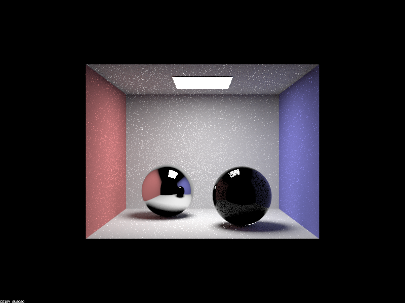
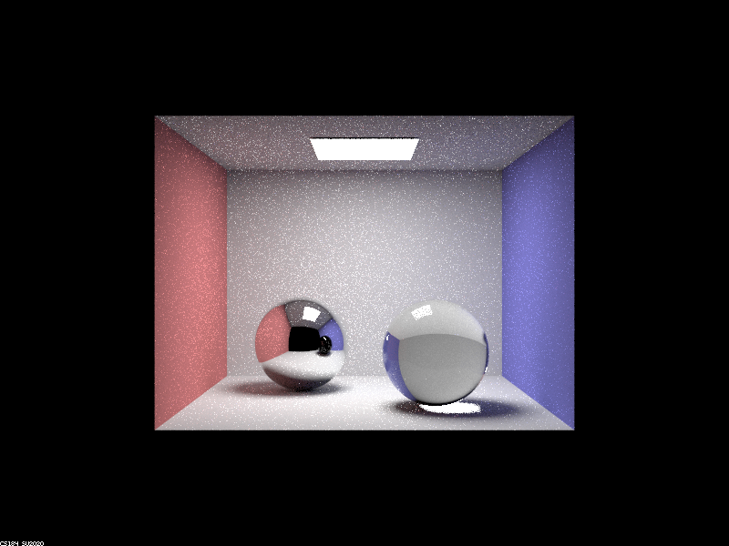

CS 184: Computer Graphics and Imaging, Spring 2023
Assignment 3-2: Additional Features to PathTracer
Anthony Ebiner and Shruteek Mairal, CS184-cottage-bois
Overview
In this project, we extended an existing renderer to account for glassy, refractive, mirror, and microfacet
materials. We first implemented functions for the reflection and refraction *using Snell’s Law) of incoming light
sample rays for specular materials. We then added surface light ray sampling for reflective materials and refractive
materials assuming no Lambertian falloff, and finally combined both reflection and refraction into glassy materials
using Schlick’s approximation and an internal reflection check to determine whether refraction occurs. When coding
for reflection to determine the reflected ray direction, we encountered an issue with returning the wrong reflected
direction given our input and surface normal, which we traced back to the reflection equation we were using, which
was based on a model where the incoming ray pointed towards the origin; when we identified this issue, we simply
inverted our reflected ray direction, and the issue resolved itself. We then implemented the BRDF for microfacet
materials by using a Beckmann normal distribution function to model the roughness and an RGB approximation for the
Fresnel term to model the reflection of incoming wavelengths. We also implemented weighted importance sampling for
microfacet materials based on the Beckmann normal distribution function to minimize noise and improve efficiency. We
modified the eta and k values of the Fresnel approximation terms based on the metal being modeled and the alpha
values of the normal distribution based on the average surface roughness.
Part 1: Mirror and Glass Materials
Mirror and Glass Balls (64 Pixel Rays, 4 Light Rays)
 max-depth=0
max-depth=0
|
 max-depth=1
max-depth=1
|

max-depth=2
|
|

max-depth=3
|
 max-depth=4
max-depth=4
|
max-depth=5
|
|
max-depth=100
|
With an increase of the ray depth, light that has bounced on multiple surfaces reaches the camera. At each
successive bounce, more of the scene is lit and the scene becomes brighter.
0: Only rays that travel from the light source directly to the sensor are rendered.
1: We see light that hits the walls and bounces to the sensor. We also see the reflective effects of the glass,
light that is directly reflected off the glass to the camera. There are dark shadows beneath the balls where the
direct light is blocked.
2: We see light with two bounces, such as light that bounces off a wall before bouncing off the ceiling or
reflective ball. We can see much of the scene reflected off the mirror ball. We can also see the scene reflected off
the glass ball. This scene in the glass ball is much darker because little of the light is reflected, most is
refracted.
3: We see the light refracted through the glass ball. This takes three bounces because the light must bounce off a
wall before refracting through two surfaces when entering and exiting the ball. There is a bright spot under the
glass ball where light from the source directly refracted through the ball before bouncing off the floor.
4: We see the glass ball reflected off the mirror ball take color. We also see light that reflects off the mirror
ball, refracts through the glass ball, and bounces off the right wall, creating a bright spot on the wall. We also
see light in the bright spot on the floor reflecting off the glass ball again.
5: Much of the scene gets brighter, particularly the shadows under the balls and the glass ball as seen reflected
off the mirror ball. Light from consecutive bounces off walls is included in the sum total illumination.
100: The scene gets brighter from the consecutive bounces.
Part 2: Microfacet Material
Effect of Different Alpha Values (128 Pixel Rays, 1 Light Ray, Max Depth 5)
|
alpha=0.005
|
alpha=0.05
|
|
alpha=0.25
|
alpha=0.5
|
With an increase in the alpha value, the surface of the dragon becomes rougher and more diffuse. At the lower
values, the dragon is very glossy and reflective. Although there is still a gold tint, we can see much of the scene
reflected off the surface. This is particularly pronounced in the dark regions where rays traced from the camera
bounce out of the scene without hitting any walls. With higher alpha values, there are similar reflections, with the
addition of bright gold patches, particularly along the top of the dragon. These are from rays hitting the diffuse
surface before hitting the sensor. At the highest alpha values, we see more diffuse lighting on the surfaces closer
to perpendicular to the light source. At an alpha value of 0.5, we see little reflected light, and there are no dark
spots.
Hemisphere vs Importance Sampling (64 Pixel Rays, 1 Light Ray, Max Depth 5)
|
Hemisphere Sampling
|
Importance Sampling
|
With hemisphere sampling, the image has more artifacts, particularly around the edges of the bunny. With hemisphere
sampling, the rays are sampled over the whole cosine-weighted hemisphere. For surfaces with high angles of
incidence, the generated rays may have little effect on the estimated illumination, causing the black edges. The
rest of the rabbit is much less smooth than when importance sampling is used, which samples rays using the Beckmann
normal distribution function. These rays are much more likely to contribute to the illumination of the rabbit.
Different Materials (128 Pixel Rays, 4 Light Ray, Max Depth 5)
|
Iron
|
Lead
|
Platinum
|
Overview
We had a bit of trouble working on this project, because the recent storm caused our apartment
to be without power for more than 4 days, by which time we were on the road for a pre-planned
spring break trip. We were able to get our development environments set up on our laptops, and
used the campus Wi-Fi to finish the project. Besides these setbacks, the project went well, and
we worked well together. We chose to complete the two parts that let us render the prettiest
images. Being able to render these images ourselves was quite rewarding.